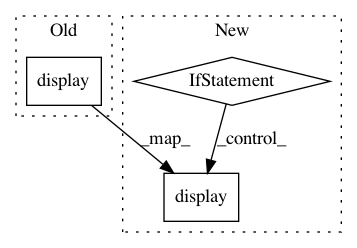

aac7b54c8d6957786a9aa70e896cef10fe0ab9fe,doc/examples/tracking_sfm.py,,,#,17
Before Change
vol_actor = actor.slicer(t1_data)
vol_actor.display(40, None, None)
vol_actor2 = vol_actor.copy()
vol_actor2.display(None, None, 35)
ren = window.Renderer()
After Change
from dipy.tracking.streamline import select_random_set_of_streamlines
plot_streamlines = select_random_set_of_streamlines(streamlines, 900)
if have_fury:
streamlines_actor = actor.streamtube(
list(move_streamlines(plot_streamlines, inv(t1_aff))),
colormap.line_colors(streamlines), linewidth=0.1)
vol_actor = actor.slicer(t1_data)
vol_actor.display(40, None, None)
vol_actor2 = vol_actor.copy()
vol_actor2.display(None, None, 35)
ren = window.Renderer()
ren.add(streamlines_actor)
ren.add(vol_actor)
ren.add(vol_actor2)
window.record(ren, out_path="tractogram_sfm.png", size=(800, 800))
if interactive:
window.show(ren)
.. figure:: tractogram_sfm.png
:align: center
In pattern: SUPERPATTERN
Frequency: 3
Non-data size: 3
Instances
Project Name: nipy/dipy
Commit Name: aac7b54c8d6957786a9aa70e896cef10fe0ab9fe
Time: 2019-07-21
Author: girard.gabriel@gmail.com
File Name: doc/examples/tracking_sfm.py
Class Name:
Method Name:
Project Name: daavoo/pyntcloud
Commit Name: 8d63d75858cc6df30ea19c55f0da955d8d46f53a
Time: 2018-07-26
Author: daviddelaiglesiacastro@gmail.com
File Name: pyntcloud/core_class.py
Class Name: PyntCloud
Method Name: plot
Project Name: ANSSI-FR/SecuML
Commit Name: 7b414fbc6c221eb3a06f8a1c1a08c9dc13608e93
Time: 2019-05-03
Author: anael.beaugnon@ssi.gouv.fr
File Name: secuml/core/features_analysis/plots.py
Class Name: FeaturePlots
Method Name: export